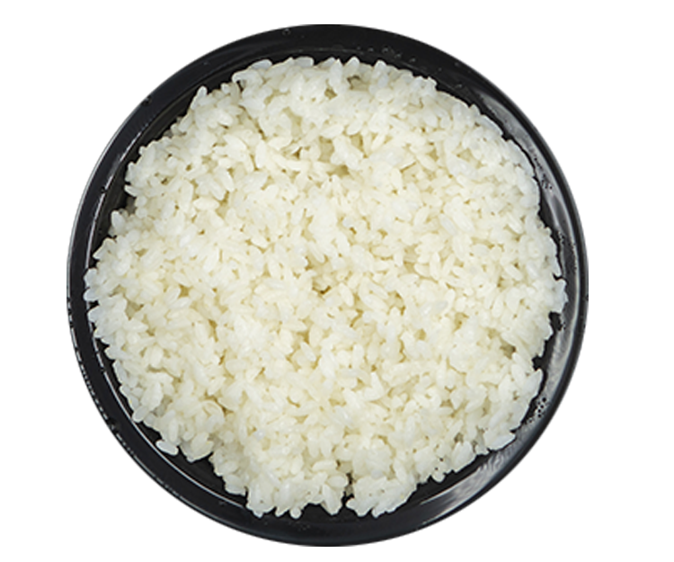
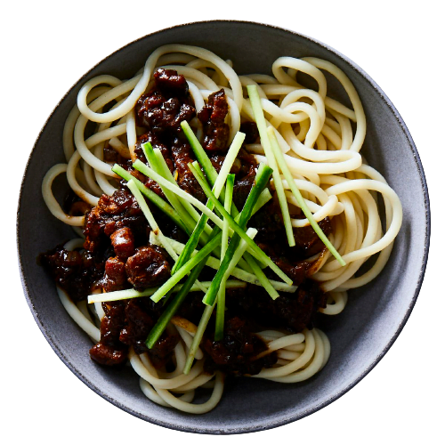

Arroz

- Óleo
- Cebola e alho
- Sal
- 2 xícaras de arroz
- 4 xíciras de água
Aquecer óleo (azeite ou manteiga). Fritar cebola e alho bem picadinhos ou triturados até murcharem. Colocar 4 xícaras de água , sal a gosto e deixar ferver. Adicionar 2 xícaras de arroz, mexer bem, tampar a panela e baixar o fogo. Quando secar, desligar o fogo, deixar descansar e em seguida soltar com um garfo.
Macarrão

- Meio pacote de macarrão
- 2,5L de água
- Sal a gosto
- 4 colheres de sopa de óleo
- Meia cebola em cubos
- Molho a sua preferência
Em uma panela, coloque aproximadamente 2 litros e meio de água para cozinhar o macarrão e acrescente sal a gosto. Deixe ferver. Adicione meio pacote do macarrão de sua preferência e cozinhe até ficar al dente. Escorra e reserve. Em seguida, adicione 4 colheres de sopa de óleo e meia cebola em cubos em uma panela. Refogue. Acrescente meia xícara do molho de sua preferência e deixe ferver. Depois, transfira o macarrão para a panela e misture. Sirva em seguida.
Limonada
- 1 limão
- 1L de água gelada
- Açúcar ou adoçante a gosto
- Gelo a gosto
Corte as extremidades do limão, coloque o limão com casca no liquidificador. Bata até ralar o limão com a casca, adicionando toda água gelada. Adoce com açúcar ou adoçante, bata mais um pouco e coe.